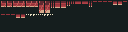
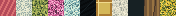

UO–004 × UO–008 / MATERIAL STUDY 07
越过水面，
世界开始失真。
抛得越远，来物越不像这个世界的生命。
六组立体模型、独立像素材质，以及一次命名实验。
SOURCE ASSETS
像素留下，异化长出来。
参照本地 Minecraft 1.21.1 原版模型比例与贴图结构，每个部件分别分配 UV；为牛皮、羊毛、眼部和晶化裂纹制作独立材质；鱿鱼只用躯干与八条触腕，不加眼睛或额外部件。每组附 Blockbench 源文件，仍需接入游戏。

下载当前生物材质 PNG ↓

皮肤 / 苍白 / 植被 / 荧光 / 晶体 / 空壳 / 黄金 / 羊毛 / 眼部 / 木纹 / 蒲公英
下载原始材质 PNG ↓